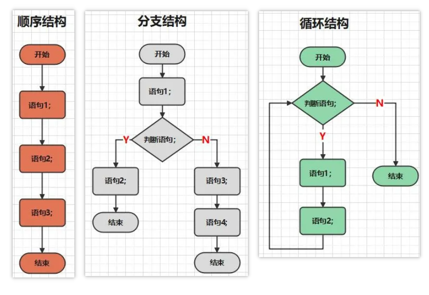
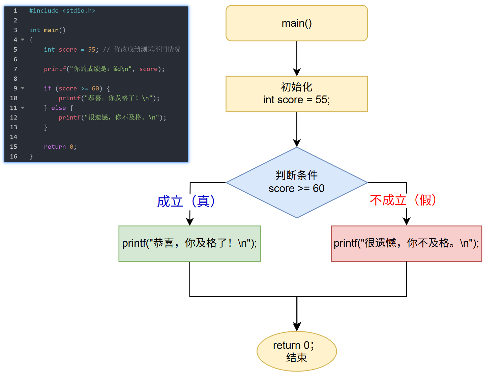
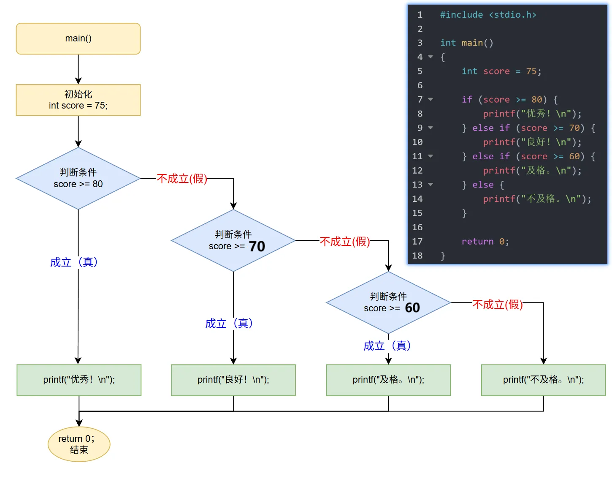

<!DOCTYPE lake>
<p data-lake-id="u3da8603e" id="u3da8603e"></p><hr/><h1 data-lake-id="RurDg" id="RurDg"><span data-lake-id="u6513270e" id="u6513270e">1&gt; 顺序结构</span></h1><span class="yuque-card-unsupported">[codeblock]</span><p data-lake-id="ube26eccf" id="ube26eccf"><span data-lake-id="u7b5ea097" id="u7b5ea097">程序顺序执行，顺序结构是组成其他结构的基础；</span></p><hr/><h1 data-lake-id="a8wTX" id="a8wTX"><span data-lake-id="u0414706d" id="u0414706d">2&gt; 单分支 if </span></h1><p data-lake-id="ufde3e217" id="ufde3e217"><span data-lake-id="u961c853e" id="u961c853e">功能需求：编写程序，判断学生考试成绩是否及格（假设60分为及格线）</span></p><span class="yuque-card-unsupported">[codeblock]</span><span class="yuque-card-unsupported">[codeblock]</span><p data-lake-id="ua33b3e4e" id="ua33b3e4e"><span data-lake-id="u087f37c1" id="u087f37c1">问题：当前程序只能输出成绩，无法做出判断，我们需要根据成绩值输出"及格"或"不及格"</span></p><hr/><h1 data-lake-id="ZZxZ7" id="ZZxZ7"><span data-lake-id="u0a5150b7" id="u0a5150b7">3&gt; 双分支 if-else</span></h1><p data-lake-id="u8238bbd9" id="u8238bbd9"><span data-lake-id="u9611e300" id="u9611e300">功能需求：解决不及格时没有输出问题</span></p><span class="yuque-card-unsupported">[codeblock]</span><p data-lake-id="u6594318e" id="u6594318e"><span data-lake-id="u1f5f0603" id="u1f5f0603">执行流程图：</span></p><p data-lake-id="udf1f176c" id="udf1f176c"></p><p data-lake-id="u161def3e" id="u161def3e"><span data-lake-id="uc1669030" id="uc1669030">​</span><br/></p><span class="yuque-card-unsupported">[codeblock]</span><p data-lake-id="uc2a8731b" id="uc2a8731b"><br/></p><span class="yuque-card-unsupported">[codeblock]</span><hr/><h1 data-lake-id="cysG4" id="cysG4"><span data-lake-id="u0f0f56e1" id="u0f0f56e1">3&gt; 多分支 if - else if - else</span></h1><p data-lake-id="uf8074005" id="uf8074005"><span data-lake-id="u13ae404a" id="u13ae404a">功能需求：我们想区分优秀(90+)、良好(80-89)、中等(70-79)、及格(60-69)和不及格(&lt;60)</span></p><span class="yuque-card-unsupported">[codeblock]</span><p data-lake-id="u19faf005" id="u19faf005"></p><span class="yuque-card-unsupported">[codeblock]</span><p data-lake-id="uae09895d" id="uae09895d"><br/></p><hr/><h1 data-lake-id="ZCit5" id="ZCit5"><span data-lake-id="uf4bf6296" id="uf4bf6296">4&gt; 条件运算符  ? :</span></h1><span class="yuque-card-unsupported">[codeblock]</span><span class="yuque-card-unsupported">[codeblock]</span><hr/><h1 data-lake-id="gbRao" id="gbRao"><span data-lake-id="u259ce054" id="u259ce054">🐻</span><span data-lake-id="u56f8ce18" id="u56f8ce18">实践练习：</span></h1><p data-lake-id="u5238f79e" id="u5238f79e"><span data-lake-id="u6ca55b22" id="u6ca55b22">习题 1&gt; 奇偶判断</span></p><p data-lake-id="u6dce9850" id="u6dce9850"><span data-lake-id="u593563aa" id="u593563aa">题目：输入一个整数，判断是奇数还是偶数。</span></p><hr/><p data-lake-id="u789cced3" id="u789cced3"><span data-lake-id="u72d83687" id="u72d83687">习题 2&gt; 闰年判断</span></p><p data-lake-id="u494a2a7f" id="u494a2a7f"><span data-lake-id="ucec2bb3f" id="ucec2bb3f">题目：输入一个年份，判断是否为闰年。</span></p><p data-lake-id="u5600df63" id="u5600df63"><span data-lake-id="u8b6f26a9" id="u8b6f26a9">提示：闰年规则：能被4整除但不能被100整除，或能被400整除。</span></p><hr/><p data-lake-id="u19e257eb" id="u19e257eb"><span data-lake-id="u8c30715c" id="u8c30715c">习题 3&gt; 求3个数的最大值</span></p><p data-lake-id="uab772632" id="uab772632"><span data-lake-id="ubf58872e" id="ubf58872e">题目：输入3个整数，找出其中的最大值。</span></p><p data-lake-id="u0e28d0b9" id="u0e28d0b9"><span data-lake-id="u2fd37457" id="u2fd37457">要求：使用2种方式实现，if-else语句 和 条件运算符 。</span></p><hr/><p data-lake-id="u6f0c9202" id="u6f0c9202"><span data-lake-id="ub2eb757d" id="ub2eb757d">习题 4&gt; 星期转换</span></p><p data-lake-id="u5537ebd1" id="u5537ebd1"><span data-lake-id="ufed29a67" id="ufed29a67">题目：输入数字1-7，输出对应的星期几（1=星期一，7=星期日）。</span></p>